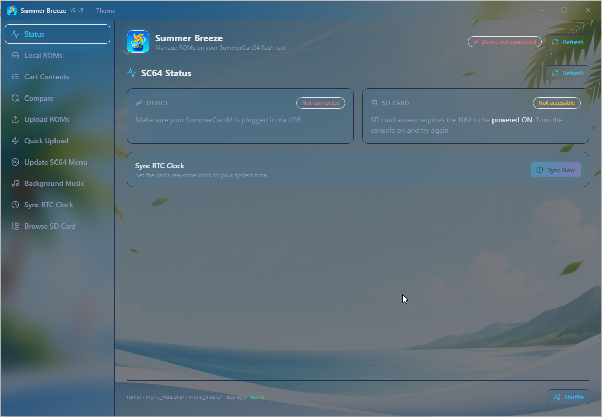

Manage ROMs & saves on your
SummerCart64
A cross-platform desktop GUI that deploys straight to the cart, backs up saves, updates the SC64 menu, syncs the RTC and browses the SD card — in one dark, themeable app.

deployed to cart save backed up SC64 menu updatedEverything your cart needs, in one app
Thirteen screens wrap the Summer Breeze CLI — from status checks to firmware updates.
Status
Live sc64deployer info — firmware, RTC, save type, CIC seed, TV type, ROM config and SD card state.
Local ROMs
Import .z64 / .n64 / .v64 files with N64 header validation and deduplication by game identity.
Cart Contents
See exactly what is stored on the SD card and which folders your ROMs live in.
Compare
Find which local ROMs are missing from the card so you can sync before a session.
Upload ROMs
Batch-upload local ROMs to any folder on the SD card.
Deploy to Cart
Flash any local ROM straight into the cart — carrying a save and a save-type override, with the old save backed up first.
Quick Upload
One-click upload straight to the SD card root.
Save Manager
Per-game save history, sync with the SD card’s /saves folder, and restore any backup by deploying it with a ROM.
Update SC64 Menu
Fetch the latest official or custom sc64menu.n64, validate it and flash it with a backup first.
Background Music
Set menu music with the custom menu build — MP3s from the app’s menu_music folder.
Sync RTC Clock
Set the cart’s real-time clock from your system time.
Browse SD Card
An interactive file browser for exploring the SD card without leaving the app.
Console
A live, persisted log of the bridge’s output with copy/export — deploy failures are always explainable.
How it works
From download to playing — and your saves never at risk.
1 — Connect
Install the app. Python 3.10+ and sc64deployer are detected and one-click installed on first launch. Plug the cart in, power the N64 on, and check the Status screen.
2 — Import & manage
Add validated ROMs to your library, upload them to the SD card, or deploy one straight into the cart with its save carried along.
3 — Play & protect
Back up saves with per-game history, update the SC64 menu, sync the RTC — while the Console logs every step.
Fourteen themes, just like the app
Try the same Gallery Glass family, solid palettes and light mode the app ships with — click one and watch the site re-theme.
Runs where you do
Installed builds auto-update via electron-updater; Windows portables self-update by swapping in the newer exe.
🪟 Windows
- Universal NSIS installer (x64 & ARM64)
- Arch-specific portable builds
- Self-updating portables
Frequently asked questions
.z64 (big-endian), .n64 (little-endian) and .v64 (byte-swapped). Every file is validated against its N64 header (magic word, byte order, title, game code, region); non-ROM files are rejected and duplicates are skipped by game identity.
sc64deployer. It is built for real hardware.
Ready to manage your cart?
Grab the latest release for your operating system, plug in your SummerCart64, and let the app handle the rest.
Get Summer Breeze GUI